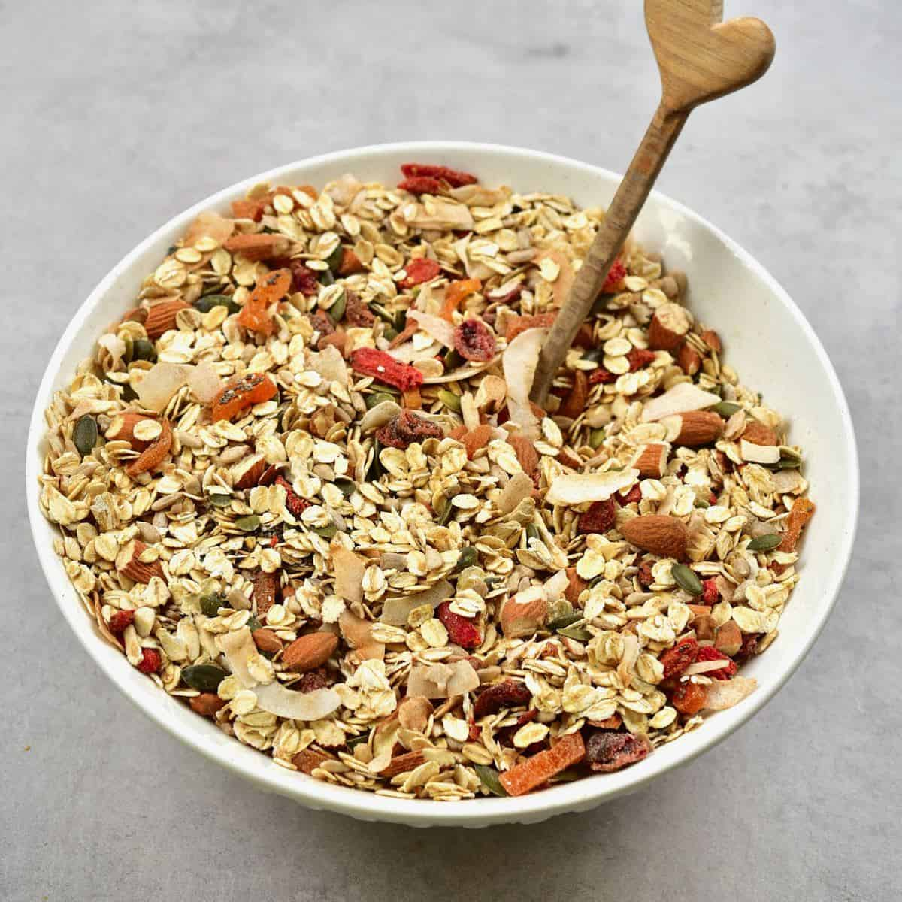

Muesli
Ingredients
- 250g (9oz) porridge oats
- 75g (3oz) wholewheat flakes
- 50g (2oz) bran buds
- 75g (3oz) sunflower seeds
- 175g (6oz) sultanas
- 175g (6oz) dried or fresh pears (or apricots, figs or peaches), cut into small pieces
Steps
- Mix together the porridge oats, wholewheat flakes, bran buds, sunflower seeds, sultanas and dried pears. (The dried fruits can be varied according to taste and availability, but keep ratio of grains to fruit about the same.)
- The dry muesli will keep fresh for several weeks if stored in an airtight container.